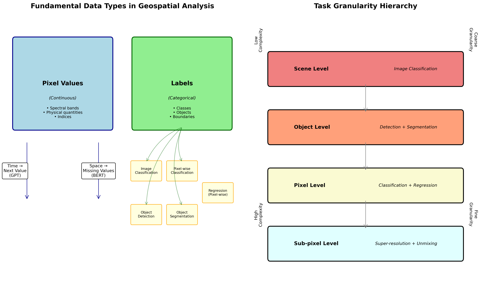
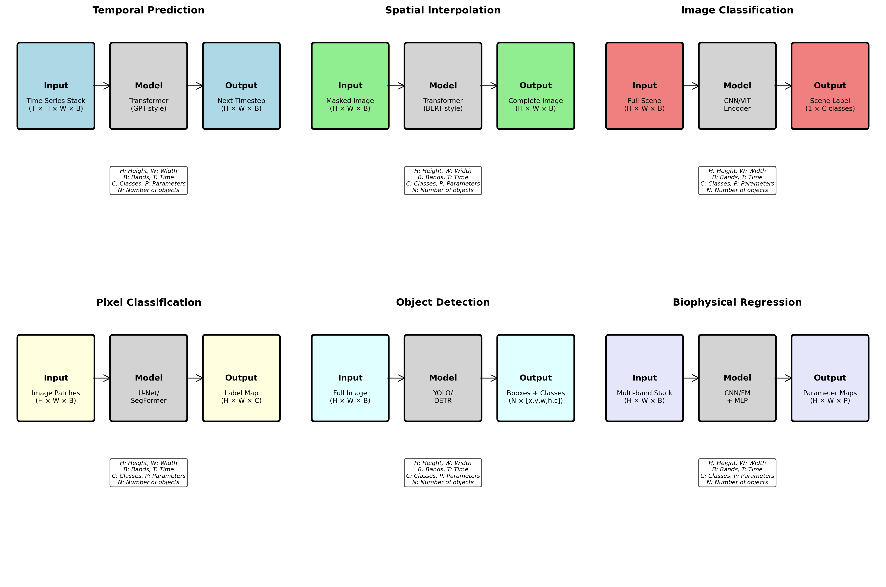
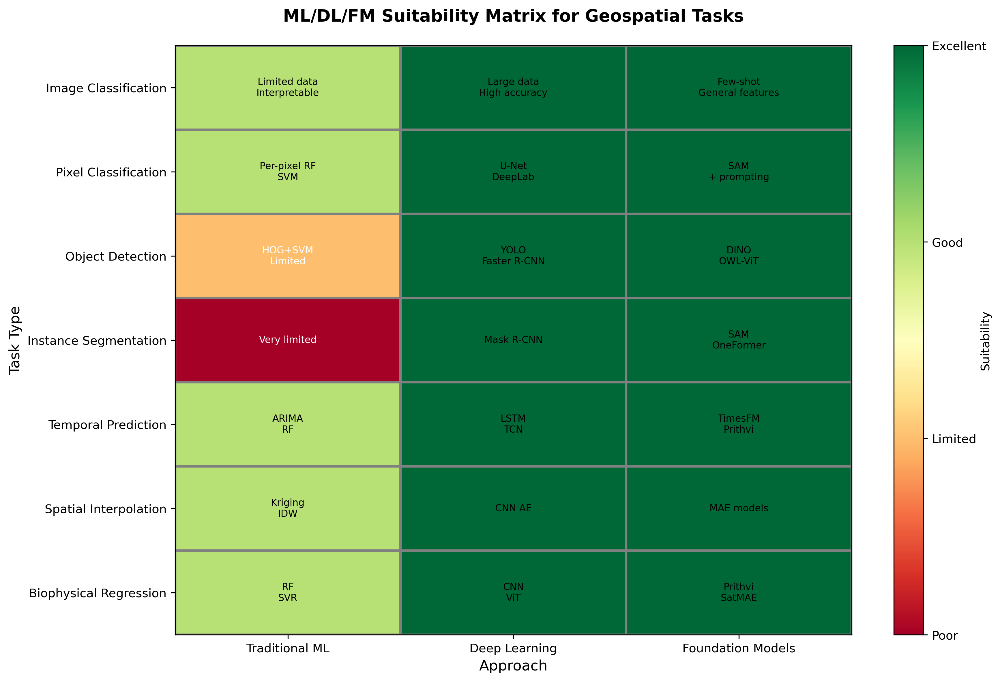

Overview
In geospatial data science and remote sensing, prediction tasks form a natural hierarchy from pixel-level analysis to complex object understanding. This document explores the relationships between different prediction tasks, their input-output structures, and the suitability of various machine learning approaches.
The Fundamental Dichotomy: Pixel Values vs. Labels
At the core of geospatial analysis, we work with two fundamental types of data:

1. Pixel Values (Continuous Data)
- Raw spectral measurements from sensors
- Physical quantities (temperature, reflectance, radiance)
- Derived indices (NDVI, EVI, moisture indices)
- Can be predicted, interpolated, or forecasted
2. Labels (Categorical/Discrete Data)
- Human-assigned categories
- Land cover classes
- Object boundaries and types
- Binary masks (water/no water, cloud/clear)
Pixel Value Prediction Tasks
When working with continuous pixel values, we encounter two primary prediction paradigms:
Temporal Prediction (Next Value)
Task: Predict future pixel values based on historical time series
Approach: Autoregressive models (GPT-like architectures)
Example Applications:
Vegetation phenology forecasting
Surface temperature prediction
Crop yield estimation
# Conceptual example
import torch
import torch.nn as nn
class TemporalPixelPredictor(nn.Module):
"""GPT-style temporal prediction for pixel time series"""
def __init__(self, num_bands, hidden_dim=256):
super().__init__()
self.embedding = nn.Linear(num_bands, hidden_dim)
self.transformer = nn.TransformerEncoder(
nn.TransformerEncoderLayer(hidden_dim, nhead=8),
num_layers=6
)
self.predictor = nn.Linear(hidden_dim, num_bands)
def forward(self, x):
# x shape: (batch, time, bands)
embedded = self.embedding(x)
# Causal mask for autoregressive prediction
features = self.transformer(embedded)
return self.predictor(features)Spatial Prediction (Missing Values)
Task: Fill in missing pixel values based on spatial context
Approach: Masked modeling (BERT-like architectures)
Example Applications:
Cloud gap filling
Sensor failure recovery
Super-resolution
Data fusion across sensors
class SpatialPixelPredictor(nn.Module):
"""BERT-style spatial prediction for missing pixels"""
def __init__(self, num_bands, patch_size=16, hidden_dim=256):
super().__init__()
self.patch_embed = nn.Linear(num_bands * patch_size**2, hidden_dim)
self.transformer = nn.TransformerEncoder(
nn.TransformerEncoderLayer(hidden_dim, nhead=8),
num_layers=6
)
self.decoder = nn.Linear(hidden_dim, num_bands * patch_size**2)
def forward(self, x, mask):
# x shape: (batch, height, width, bands)
# mask indicates missing pixels
patches = self.patchify(x)
embedded = self.patch_embed(patches)
# No causal mask - bidirectional attention
features = self.transformer(embedded)
return self.unpatchify(self.decoder(features))Label-Based Prediction Tasks
Working with labels introduces a hierarchy of complexity from image-level to pixel-level granularity:
1. Image Classification
- Granularity: Entire image/scene
- Input: Full image (H × W × Bands)
- Output: Single label per image
- Example: “This Sentinel-2 tile contains urban area”
2. Pixel-wise Classification
- Granularity: Individual pixels
- Input: Image patches or full image
- Output: Label map (H × W × Classes)
- Example: Land cover mapping where each pixel gets a class
3. Object Detection
- Granularity: Bounding boxes
- Input: Full image
- Output: List of [bbox, class, confidence]
- Example: Detecting buildings, vehicles, or agricultural fields
4. Object Segmentation
- Granularity: Precise object boundaries
- Input: Full image
- Output: Instance masks + classes
- Example: Delineating individual tree crowns or building footprints
Regression for Novel Variable Prediction
Beyond classification, regression tasks predict continuous variables that may not be directly observable:
Pixel-wise Regression Applications
Biophysical Parameter Estimation
- Leaf Area Index (LAI)
- Chlorophyll content
- Soil moisture
- Biomass
Environmental Variable Prediction
- Air quality indices
- Surface temperature
- Precipitation estimates
- Carbon flux
Socioeconomic Indicators
- Population density
- Economic activity
- Energy consumption
Input-Output Relationships for Regression

class GeospatialRegressor(nn.Module):
"""General framework for pixel-wise regression"""
def __init__(self, input_bands, output_variables):
super().__init__()
self.encoder = nn.Sequential(
nn.Conv2d(input_bands, 64, 3, padding=1),
nn.ReLU(),
nn.Conv2d(64, 128, 3, padding=1),
nn.ReLU(),
# ... more layers
)
self.decoder = nn.Conv2d(128, output_variables, 1)
def forward(self, x):
# x: (batch, bands, height, width)
features = self.encoder(x)
# Output: (batch, variables, height, width)
return self.decoder(features)ML/DL/FM Tool Suitability Matrix

| Task Type | Traditional ML | Deep Learning | Foundation Models |
|---|---|---|---|
| Image Classification | Random Forest, SVM on hand-crafted features | CNNs (ResNet, EfficientNet) | CLIP, RemoteCLIP |
| Pixel Classification | Random Forest per pixel | U-Net, DeepLab | Segment Anything + prompting |
| Object Detection | Limited (HOG+SVM) | YOLO, Faster R-CNN | DINO, OWL-ViT |
| Instance Segmentation | Very limited | Mask R-CNN | SAM, OneFormer |
| Temporal Prediction | ARIMA, Random Forest | LSTM, Temporal CNN | TimesFM, Prithvi |
| Spatial Interpolation | Kriging, IDW | CNN autoencoders | MAE-based models |
| Biophysical Regression | Random Forest, SVR | CNN, Vision Transformer | Fine-tuned Prithvi, SatMAE |
Choosing the Right Approach
Use Traditional ML When:
- Limited training data available
- Interpretability is crucial
- Computational resources are constrained
- Working with tabular features
Use Deep Learning When:
- Large labeled datasets available
- Complex spatial patterns exist
- High accuracy is priority
- GPU resources available
Use Foundation Models When:
- Limited task-specific labels
- Need zero/few-shot capabilities
- Working across multiple sensors/resolutions
- Require general feature representations
Practical Implementation Considerations
Data Preparation Pipeline
class GeospatialDataPipeline:
def __init__(self, task_type):
self.task_type = task_type
def prepare_data(self, imagery, labels=None):
"""Prepare data based on task requirements"""
if self.task_type == "temporal_prediction":
# Stack time series
return self.create_time_series_sequences(imagery)
elif self.task_type == "spatial_interpolation":
# Create masked inputs
return self.create_masked_inputs(imagery)
elif self.task_type == "pixel_classification":
# Create patch-label pairs
return self.create_training_patches(imagery, labels)
elif self.task_type == "object_detection":
# Format as COCO-style annotations
return self.create_detection_dataset(imagery, labels)Multi-Task Learning Opportunities
Many geospatial problems benefit from joint learning:
- Classification + Regression: Predict land cover type AND vegetation health
- Detection + Segmentation: Locate AND delineate objects
- Temporal + Spatial: Fill gaps AND forecast future values
Best Practices and Recommendations
1. Start Simple, Scale Up
- Begin with traditional ML baselines
- Move to deep learning with sufficient data
- Consider foundation models for generalization
2. Leverage Pretrained Models
- Use ImageNet pretrained encoders as starting points
- Fine-tune geospatial foundation models (Prithvi, SatMAE)
- Apply transfer learning from similar domains
3. Handle Geospatial Specifics
- Account for coordinate systems and projections
- Preserve spatial autocorrelation in train/test splits
- Consider atmospheric and seasonal effects
4. Validate Appropriately
- Use spatial and temporal holdouts
- Employ domain-specific metrics
- Validate against ground truth when available
Code Example: Unified Prediction Framework
import torch
import torch.nn as nn
from typing import Dict, Optional, Union
class UnifiedGeospatialPredictor(nn.Module):
"""Flexible architecture for various geospatial tasks"""
def __init__(
self,
input_channels: int,
task_config: Dict[str, any]
):
super().__init__()
self.task_type = task_config['type']
self.input_channels = input_channels
# Shared encoder
self.encoder = self._build_encoder(input_channels)
# Task-specific heads
if self.task_type == 'classification':
self.head = nn.Conv2d(256, task_config['num_classes'], 1)
elif self.task_type == 'regression':
self.head = nn.Conv2d(256, task_config['num_outputs'], 1)
elif self.task_type == 'detection':
self.head = self._build_detection_head(task_config)
elif self.task_type == 'temporal':
self.head = self._build_temporal_head(task_config)
def _build_encoder(self, channels):
"""Build a flexible encoder backbone"""
return nn.Sequential(
nn.Conv2d(channels, 64, 3, padding=1),
nn.BatchNorm2d(64),
nn.ReLU(),
nn.Conv2d(64, 128, 3, stride=2, padding=1),
nn.BatchNorm2d(128),
nn.ReLU(),
nn.Conv2d(128, 256, 3, stride=2, padding=1),
nn.BatchNorm2d(256),
nn.ReLU(),
)
def forward(
self,
x: torch.Tensor,
temporal_mask: Optional[torch.Tensor] = None,
spatial_mask: Optional[torch.Tensor] = None
) -> Union[torch.Tensor, Dict[str, torch.Tensor]]:
"""Forward pass adapts to task type"""
features = self.encoder(x)
if self.task_type in ['classification', 'regression']:
# Pixel-wise predictions
return self.head(features)
elif self.task_type == 'detection':
# Return dict with boxes, classes, scores
return self.head(features)
elif self.task_type == 'temporal':
# Handle sequential data
return self.head(features, temporal_mask)Summary
The hierarchy of geospatial prediction tasks spans from coarse image-level classification to fine-grained pixel-wise regression. Understanding this hierarchy helps in:
- Choosing appropriate architectures: Matching model complexity to task requirements
- Preparing data correctly: Structuring inputs and outputs for optimal learning
- Selecting suitable tools: Leveraging traditional ML, deep learning, or foundation models based on constraints
- Designing evaluation strategies: Using task-appropriate metrics and validation schemes
As the field evolves, foundation models increasingly bridge these task types, offering unified architectures that can adapt to multiple prediction scenarios with minimal modification.